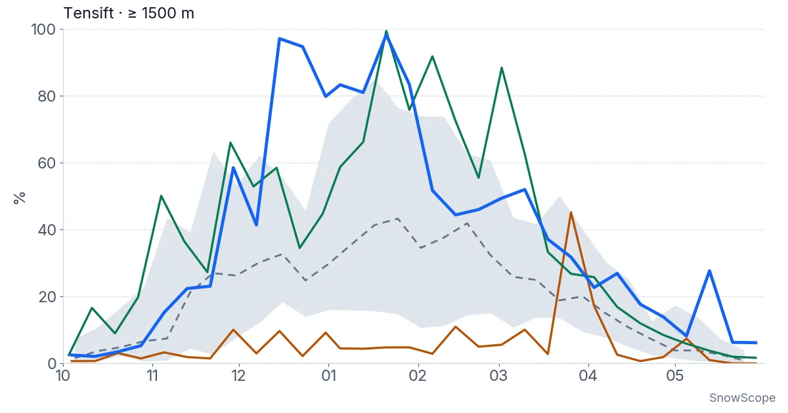

Neige dans l'Atlas : 1 cm à Oukaimden (6 novembre)
Oukaimden (Maroc) a la neige la plus épaisse dans l'Atlas (Maroc) aujourd'hui, avec environ 1 cm sur le haut du domaine. Suivent Habri avec 0 cm, puis Michlifen avec 0 cm. Ces chiffres de l'Atlas viennent de notre dernière analyse de neige, du 5 novembre, prolongée par la prévision.
Consultez les prévisions neige en temps réel pour Oukaimden sur l'application SnowScopeHauteurs de neige, alertes poudreuse et carte 3D, gratuitement.
Où est la neige aujourd'hui
Oukaimden : environ 1 cm sur le haut du domaine, avec 1 cm de neige fraîche en 72 heures. Habri : pas de neige sur les pistes. Michlifen : pas de neige sur les pistes.
1 stations sur 3 dans l'Atlas (Maroc) ont de la neige sur le haut du domaine aujourd'hui, et notre modèle compte 110 km² de surface enneigée.
La surface enneigée est passée de 400 km² le 4 novembre à 110 km² aujourd'hui, et notre prévision donne 80 km² le 9 novembre.
| Station | Hauteur de neige | Neige fraîche, 72 h | Attendu, jours suivants | Sommet |
|---|---|---|---|---|
| Oukaimden | 1 cm | 1 cm | 1 cm | 3 241 m |
| Habri | 0 cm | 0 cm | 0 cm | 2 108 m |
| Michlifen | 0 cm | 0 cm | 0 cm | 1 932 m |
Altitude, pentes et limite pluie-neige
À Oukaimden, l'isotherme 0 °C monte entre 3 810 m et 4 420 m le 7 novembre, au-dessus du sommet de la station (3 241 m) : pluie ou neige mouillée possibles sur toutes les pentes ce jour-là.
Comparé aux hivers passés
Est-ce inhabituel ? Sur les 46 derniers hivers, la hauteur de neige habituelle à cette date à 2 930 m près de Oukaimden était de 0 cm : un début d'hiver sans neige est donc normal dans l'Atlas.
Ce qui arrive
D'ici le 9 novembre, notre prévision donne 1 cm à Oukaimden.
À la prochaine perturbation, c'est Oukaimden qu'il faut surveiller : ses remontées montent à 3 241 m, bien plus haut que Habri (2 108 m) et Michlifen (1 932 m), qui ont besoin de perturbations plus froides pour blanchir.
Les prévisions à quelques jours peuvent changer : regardez à nouveau la carte la veille du départ.
Conseils aux skieurs
- De la neige sur la carte ne veut pas dire que la station est ouverte : vérifiez remontées et dates d'ouverture sur son site.
- La neige de début de saison est fine. Restez sur les pistes ouvertes et damées : cailloux et herbe se cachent juste dessous.
- Les prévisions à quelques jours peuvent changer : regardez à nouveau la carte la veille du départ.
- Activez une alerte poudreuse dans l'app SnowScope pour savoir quand Oukaimden reçoit de la neige fraîche.
À propos de ces chiffres
Les hauteurs de neige des stations sont la neige la plus épaisse sur le haut du domaine, d'après le modèle de neige SnowScope (environ 1 km, calcul du 5 novembre) ; ce sont des estimations pour une zone, pas une mesure en un point. Les valeurs des stations de mesure sont mesurées à la date indiquée. Les prévisions peuvent changer. Consultez toujours le bulletin d'avalanche officiel avant le hors-piste.
Citer ce bulletin
Pour la recherche, l'enseignement ou la presse : chiffres et graphiques réutilisables librement sous CC BY 4.0 avec cette citation.
SnowScope (2026), Neige dans l'Atlas : 1 cm à Oukaimden (6 novembre), https://snowscope.app/blog/fr/2026/11/atlas-morocco-atlas-snow-check-6-november-2026.html, consulté le 2026-11-06
SnowScope (Atlas Labs). (2026, November 6). Neige dans l'Atlas : 1 cm à Oukaimden (6 novembre). SnowScope snow reports. https://snowscope.app/blog/fr/2026/11/atlas-morocco-atlas-snow-check-6-november-2026.html
BibTeX
@misc{snowscope2026atlasmoroccoatlassnowche,
author = {{SnowScope (Atlas Labs)}},
title = {Neige dans l'Atlas : 1 cm à Oukaimden (6 novembre)},
year = {2026},
month = nov,
howpublished = {\url{https://snowscope.app/blog/fr/2026/11/atlas-morocco-atlas-snow-check-6-november-2026.html}},
note = {Published 2026-11-06 13:22 UTC; accessed 2026-11-06}
}· CC BY 4.0 · Méthodes, données et outils →
Oukaimden : neige et température selon l'altitude, cet hiver vs l'hiver dernier (outils) →
Suivre Oukaimden
Gratuit : un message quand la neige arrive, et la météo chaque matin.
Autres bulletins neige
À l'altitude d'Oukaïmeden, notre série de 46 hivers montre 12 % de jours de neige en moins ; plus bas, le signal se perd. Ce que l'on sait.

Au-dessus de 1 500 m autour du Toubkal, le sol a été blanc 94 jours pendant l'hiver 2025-26, le plus en 26 hivers d'images satellite. Jusqu'où la neige est descendue, quand elle est partie, et comment cet hiver se compare à 2008-09 et aux années sèches.

Bulletin neige dans l'Atlas (Maroc), 12 novembre. Stations de l'Atlas aujourd'hui : pas de neige sur les pentes. De la neige seulement sur les plus …